Frühlingshimmel
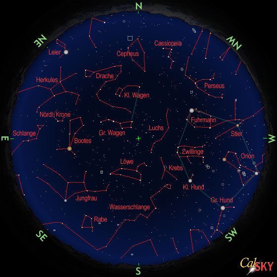
Sommerhimmel
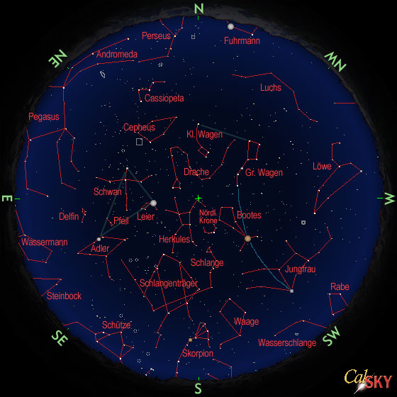
Herbsthimmel
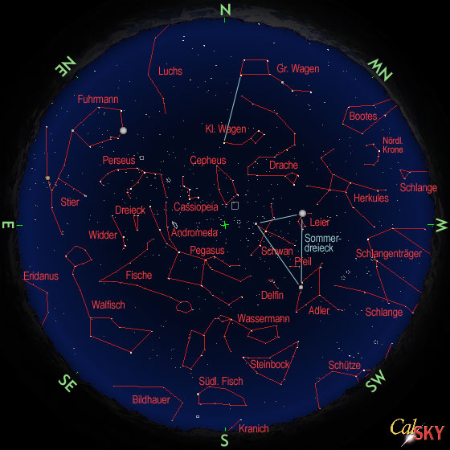
Winterhimmel
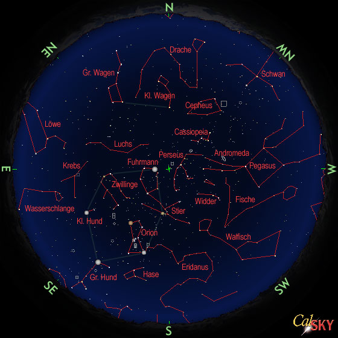
Frühlingsdreieck
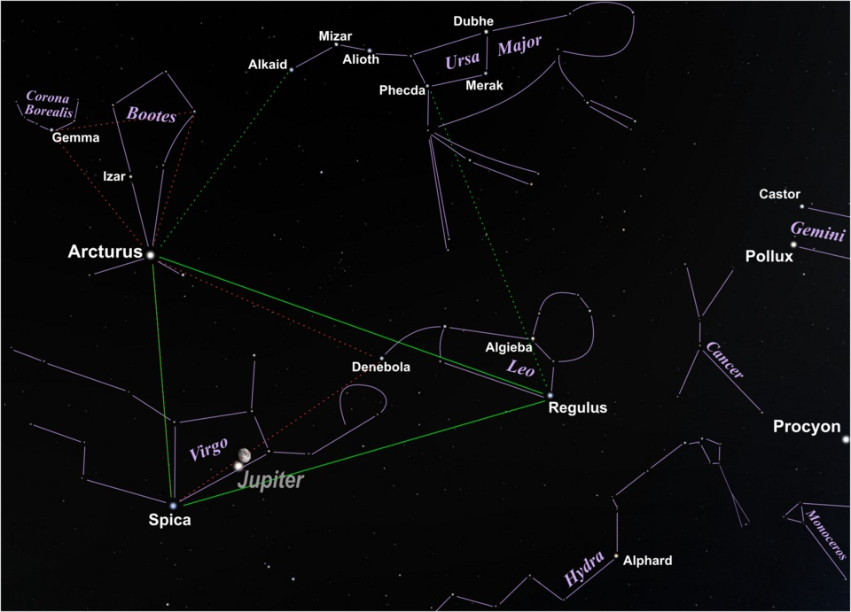
Sommerdreieck
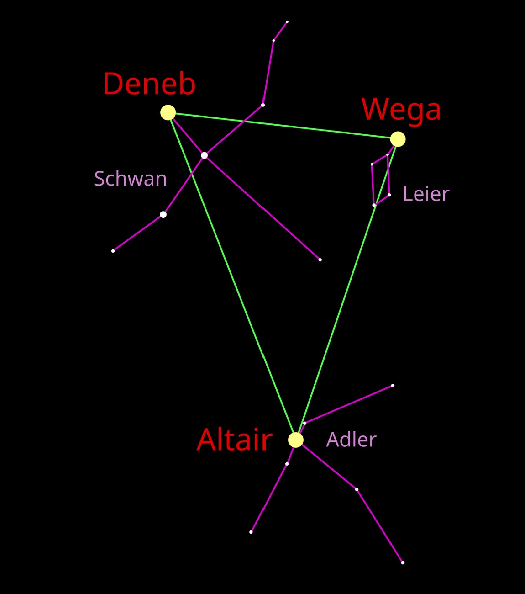
Herbstviereck
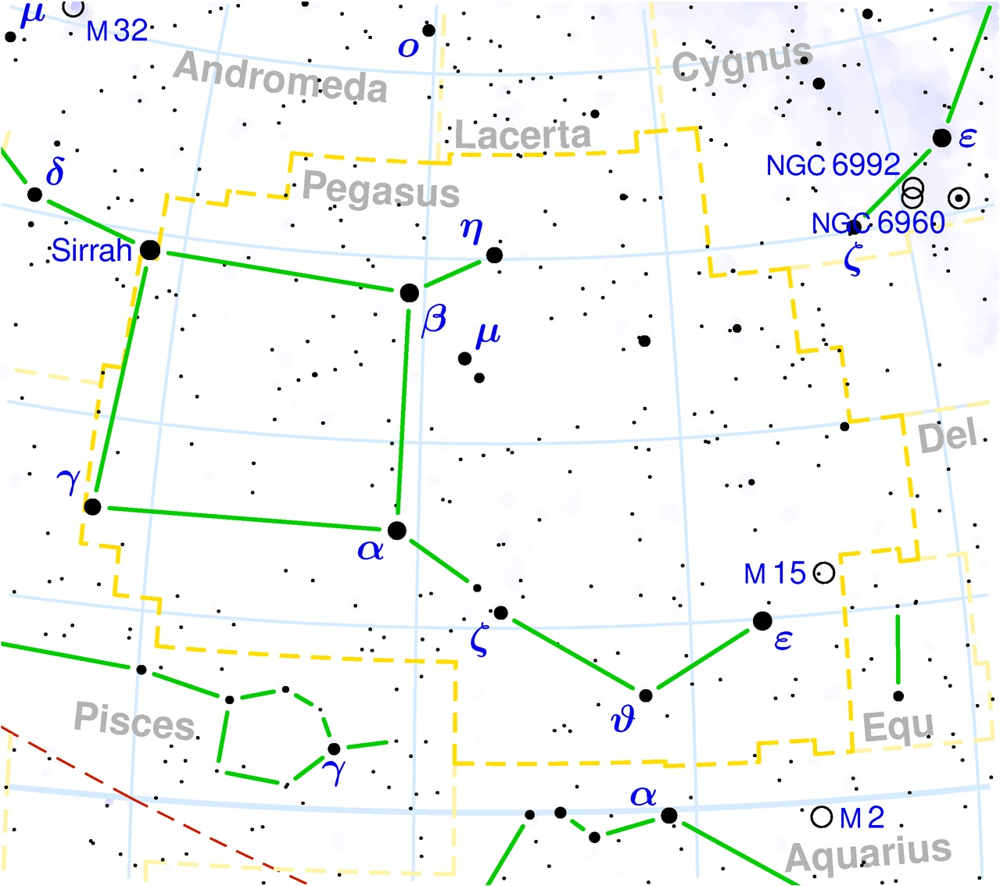
Wintersechseck
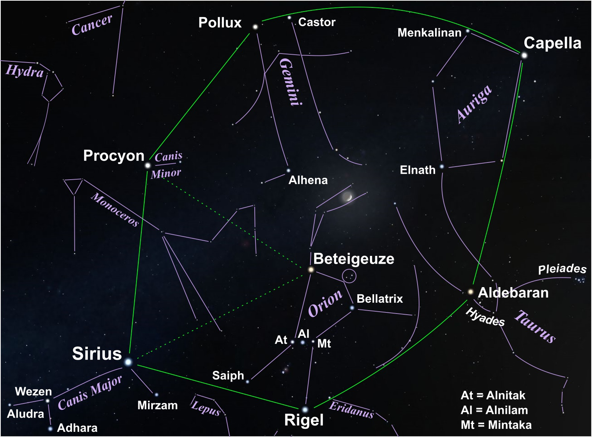
Stars on this page
Aldebaran
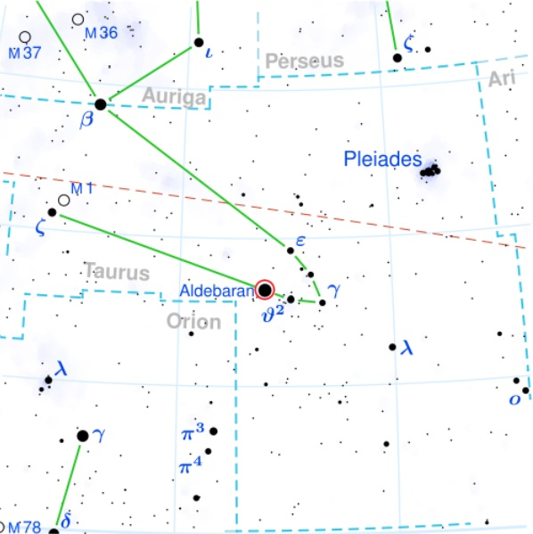
Aldebaran (α Tauri) ist der hellste Stern im Sternbild Stier und bildet dessen auffälliges rötliches Auge. Der etwa 65 Lichtjahre entfernte orangefarbene Riesenstern gehört zum Wintersechseck. Obwohl er vor dem Sternhaufen der Hyaden erscheint, ist er deutlich näher und kein Mitglied des Haufens. Sein arabischer Name bedeutet „der Nachfolgende“, weil Aldebaran den Plejaden über den Himmel zu folgen scheint. Um den Stern wurde zudem ein möglicher Riesenplanet nachgewiesen.
| Scheinbare Magnitude | ca. 0,85 mag |
|---|---|
| Sichtbarkeit | Oktober bis April; am besten im Dezember und Januar |
| Masse | ca. 1,2 M☉ |
| Entfernung | ca. 65 Lichtjahre |
Alioth
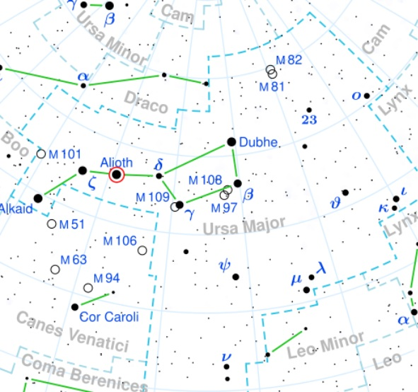
Alioth (ε Ursae Majoris) ist der hellste Stern im Sternbild Großer Bär und der dem Wagenkasten nächste Deichselstern des Großen Wagens. Der weiß leuchtende, chemisch eigentümliche Stern ist ein veränderlicher Stern vom Typ α² Canum Venaticorum: Magnetfeld und ungleich verteilte Elemente verursachen geringe Helligkeitsschwankungen. Alioth gehört zur Ursa-Major-Bewegungsgruppe. Sein arabischer Name wird meist als „Fettschwanz des Schafes“ gedeutet.
| Scheinbare Magnitude | ca. 1,76 mag |
|---|---|
| Sichtbarkeit | Ganzjährig zirkumpolar; am besten im Frühjahr |
| Masse | ca. 2,9 M☉ |
| Entfernung | ca. 83 Lichtjahre |
Alphecca
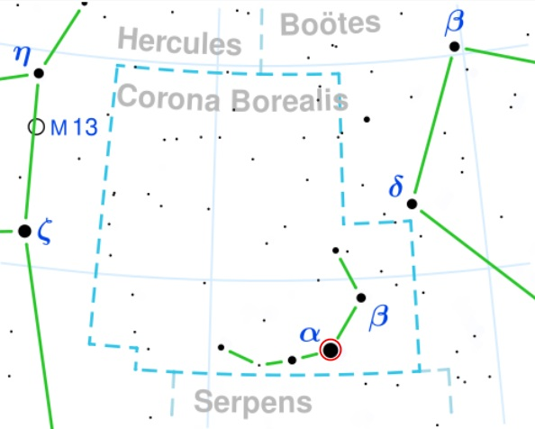
Alphecca (α Coronae Borealis), auch Gemma, ist der hellste Stern der Nördlichen Krone und bildet deren auffälligen „Edelstein“. Er ist ein bedeckungsveränderliches Doppelsternsystem: Zieht der lichtschwächere Begleiter vor dem Hauptstern vorbei, nimmt die Helligkeit geringfügig ab. Der Hauptstern leuchtet weiß und ist deutlich heißer als die Sonne. „Gemma“ bedeutet lateinisch „Edelstein“; Alphecca geht auf eine arabische Bezeichnung der Krone zurück.
| Scheinbare Magnitude | ca. 2,21–2,32 mag |
|---|---|
| Sichtbarkeit | März bis Oktober; am besten von Mai bis Juli |
| Masse | ca. 2,6 M☉ für den Hauptstern |
| Entfernung | ca. 75 Lichtjahre |
Alpheratz
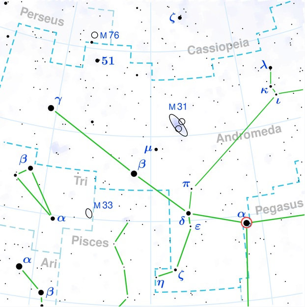
Alpheratz (α Andromedae), auch Sirrah, ist der hellste Stern der Andromeda und zugleich die nordöstliche Ecke des Pegasusquadrats. Historisch wurde er deshalb auch als δ Pegasi geführt. Alpheratz ist ein enges Doppelsternsystem; sein blauweißer Hauptstern ist ein chemisch ungewöhnlicher Quecksilber-Mangan-Stern und leicht veränderlich. Der arabische Name bedeutet sinngemäß „Nabel des Pferdes“.
| Scheinbare Magnitude | ca. 2,06 mag |
|---|---|
| Sichtbarkeit | Juli bis Januar; am besten von September bis November |
| Masse | ca. 3,6 M☉ für den Hauptstern |
| Entfernung | ca. 97 Lichtjahre |
Alkaid
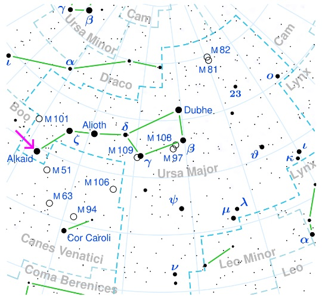
Alkaid (η Ursae Majoris) bildet das äußere Ende der Deichsel des Großen Wagens. Der blauweiße Hauptreihenstern ist wesentlich heißer und massereicher als die Sonne. Anders als die fünf mittleren Sterne des Großen Wagens gehört Alkaid nicht zur Ursa-Major-Bewegungsgruppe. Sein arabischer Name bedeutet „der Anführer“ und bezieht sich auf die alte Deutung der drei Deichselsterne als Klagefrauen vor einer Totenbahre. In Mitteleuropa ist Alkaid zirkumpolar.
| Scheinbare Magnitude | ca. 1,86 mag |
|---|---|
| Sichtbarkeit | Ganzjährig zirkumpolar; am besten im Frühjahr und Sommer |
| Masse | ca. 6,1 M☉ |
| Entfernung | ca. 104 Lichtjahre |
Altair
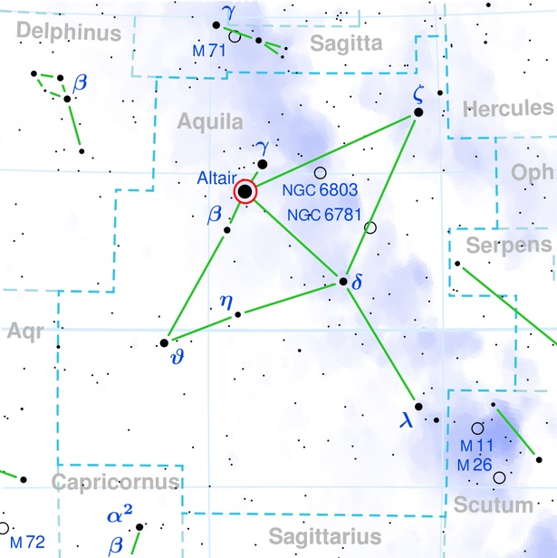
Altair (α Aquilae) ist der hellste Stern im Adler und bildet mit Wega und Deneb das Sommerdreieck. Er liegt nur etwa 16,7 Lichtjahre entfernt. Altair rotiert extrem schnell – in rund zehn Stunden – und ist dadurch deutlich abgeplattet. Der Name stammt aus dem Arabischen und bedeutet „der fliegende Adler“. Zwei schwächere Nachbarsterne lassen ihn leicht als Teil einer markanten Dreierreihe erkennen.
| Scheinbare Magnitude | ca. 0,77 mag |
|---|---|
| Sichtbarkeit | Juni bis November; am besten von Juli bis September |
| Masse | ca. 1,8 M☉ |
| Entfernung | ca. 16,7 Lichtjahre |
Antares
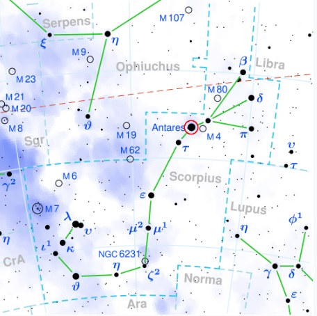
Antares (α Scorpii) ist ein roter Überriese und markiert das „Herz des Skorpions“. Sein Name bedeutet „Gegen-Ares“ beziehungsweise „Gegenmars“, da Farbe und Helligkeit an den Planeten Mars erinnern. Antares ist ein Doppelstern mit einem heißen, blauweißen Begleiter. Er liegt nahe der Ekliptik und kann daher gelegentlich vom Mond bedeckt werden. Als massereicher, weit entwickelter Stern wird er schließlich als Supernova enden.
| Scheinbare Magnitude | ca. 0,6–1,6 mag; veränderlich |
|---|---|
| Sichtbarkeit | Mai bis August; am besten im Juni und Juli, tief im Süden |
| Masse | ca. 12–15 M☉ |
| Entfernung | ca. 550 Lichtjahre |
Arcturus
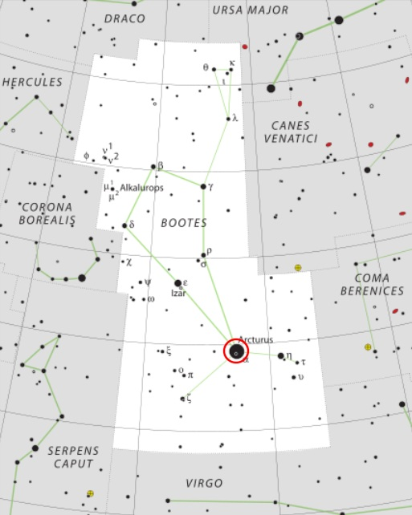
Arcturus (α Boötis) ist der hellste Stern im Bärenhüter und der hellste Stern der nördlichen Himmelshälfte. Der orangefarbene Rote Riese gehört mit Spica und Regulus zum Frühlingsdreieck. Seine große Eigenbewegung zeigt, dass er sich am Himmel vergleichsweise rasch gegenüber ferneren Sternen verschiebt. Der griechische Name bedeutet „Hüter des Bären“ und verweist auf seine Lage nahe dem Großen Bären.
| Scheinbare Magnitude | ca. −0,05 mag |
|---|---|
| Sichtbarkeit | März bis Oktober; am besten von April bis Juni |
| Masse | ca. 1,1 M☉ |
| Entfernung | ca. 36,7 Lichtjahre |
Bellatrix
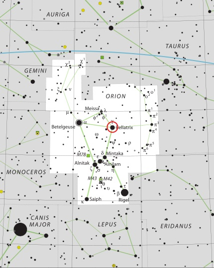
Bellatrix (γ Orionis) ist der dritthellste Stern im Orion und bildet neben Beteigeuze einen der beiden Schultersterne. Sie ist ein heißer, blauweißer Riesenstern und wesentlich massereicher sowie leuchtkräftiger als die Sonne. Ihr lateinischer Name bedeutet „Kriegerin“. Bellatrix erscheint weit weniger rötlich als Beteigeuze und verdeutlicht dadurch bereits mit bloßem Auge die unterschiedlichen Temperaturen und Entwicklungsstadien von Sternen.
| Scheinbare Magnitude | ca. 1,64 mag |
|---|---|
| Sichtbarkeit | November bis März; am besten von Dezember bis Februar |
| Masse | ca. 7,7 M☉ |
| Entfernung | ca. 250 Lichtjahre |
Betelgeuse
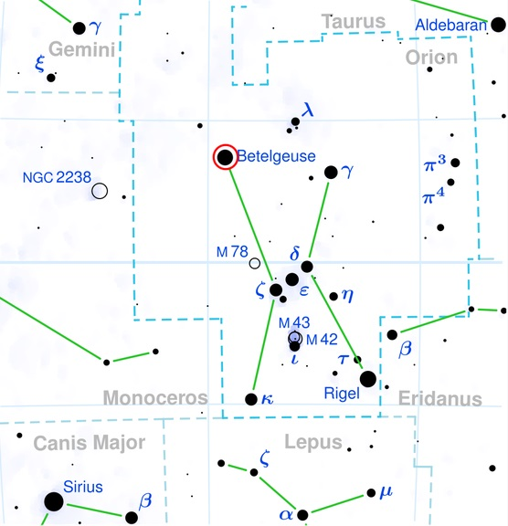
Betelgeuse (α Orionis) ist ein roter Überriese und markiert eine Schulter des Orion. Seine Helligkeit schwankt deutlich, da seine ausgedehnte Oberfläche pulsiert und große Mengen Materie ausstößt. Trotz der Bezeichnung α ist meist Rigel der hellere Stern im Orion. Beteigeuze befindet sich in einer späten Entwicklungsphase und wird eines Tages als Kernkollaps-Supernova enden – wann, lässt sich jedoch nicht seriös vorhersagen. Der Name bedeutet ungefähr „Hand der Riesin“.
| Scheinbare Magnitude | ca. 0,0–1,6 mag; deutlich veränderlich |
|---|---|
| Sichtbarkeit | November bis März; am besten von Dezember bis Februar |
| Masse | ca. 14–18 M☉ |
| Entfernung | ca. 550–650 Lichtjahre |
Capella
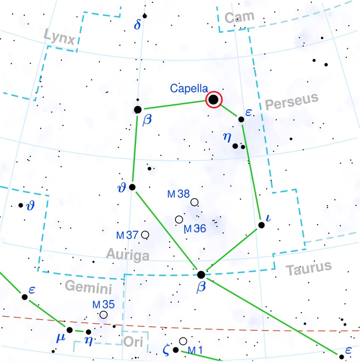
Capella (α Aurigae) ist der hellste Stern im Fuhrmann, Teil des Wintersechsecks und einer der hellsten Sterne des Nachthimmels. Was mit bloßem Auge wie ein einzelner gelblicher Stern erscheint, ist tatsächlich ein Vierfachsystem: zwei nahe beieinanderstehende gelbe Riesen und ein weiter entferntes Paar Roter Zwerge. Der lateinische Name bedeutet „kleine Ziege“ und erinnert an Amaltheia, die Ziege des Zeus.
| Scheinbare Magnitude | ca. 0,08 mag für das Gesamtsystem |
|---|---|
| Sichtbarkeit | Ganzjährig zirkumpolar; am besten von Oktober bis April |
| Masse | ca. 2,6 + 2,5 M☉ für das zentrale Hauptpaar |
| Entfernung | ca. 42,9 Lichtjahre |
Castor
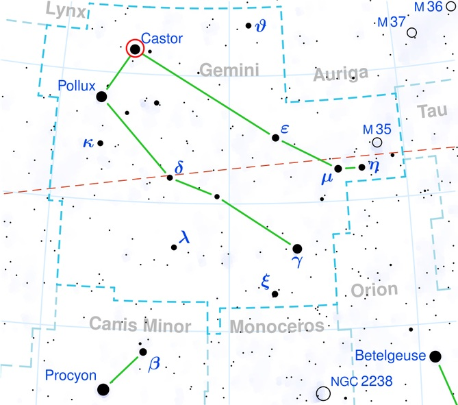
Castor (α Geminorum) ist trotz seiner Alpha-Bezeichnung etwas schwächer als Pollux. Gemeinsam bilden beide die Köpfe der mythologischen Zwillinge. Castor ist kein einzelner Stern, sondern ein bemerkenswertes System aus sechs Sternen: drei Doppelsternpaare, die gravitativ miteinander verbunden sind. Bereits ein kleines Teleskop trennt die beiden hellsten Komponenten. In der griechischen Mythologie war Castor der sterbliche Bruder des unsterblichen Polydeukes beziehungsweise Pollux.
| Scheinbare Magnitude | ca. 1,58 mag für das Gesamtsystem |
|---|---|
| Sichtbarkeit | Oktober bis Mai; am besten von Dezember bis März |
| Masse | ca. 2,4 M☉ für die hellste Komponente; Sechsfachsystem |
| Entfernung | ca. 51 Lichtjahre |
Deneb
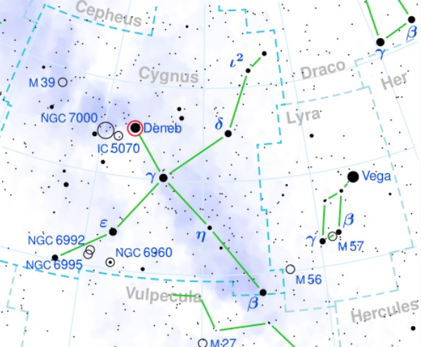
Deneb (α Cygni) ist der hellste Stern im Schwan und bildet mit Wega und Altair das Sommerdreieck. Der blauweiße Überriese ist mehrere Tausend Lichtjahre entfernt und dennoch mit bloßem Auge auffällig – ein Hinweis auf seine enorme Leuchtkraft. Deneb gehört zu den fernsten Sternen erster Größenklasse. Sein arabischer Name bedeutet „Schwanz“ und bezeichnet seine Position am hinteren Ende des Schwans beziehungsweise des auffälligen Asterismus Nördliches Kreuz.
| Scheinbare Magnitude | ca. 1,25 mag |
|---|---|
| Sichtbarkeit | Ganzjährig zirkumpolar; am besten von Juni bis November |
| Masse | ca. 19 M☉ |
| Entfernung | ca. 2.600 Lichtjahre |
Denebola
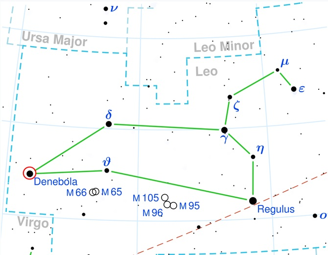
Denebola (β Leonis) markiert den Schwanz des Löwen; ihr arabischer Name bedeutet entsprechend „Schwanz des Löwen“. Der rund 36 Lichtjahre entfernte, weißlich leuchtende Hauptreihenstern ist heißer und massereicher als die Sonne. Denebola gehört zu den markantesten Sternen des Frühlingshimmels und bildet gemeinsam mit Arktur, Spica und Cor Caroli den sogenannten Großen Diamanten.
| Scheinbare Magnitude | ca. 2,14 mag |
|---|---|
| Sichtbarkeit | Februar bis Juli; am besten von März bis Mai |
| Masse | ca. 1,8 M☉ |
| Entfernung | ca. 35,9 Lichtjahre |
Dubhe
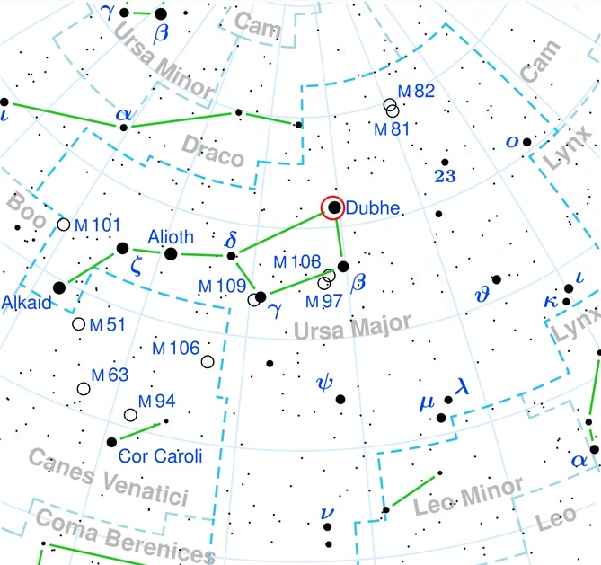
Dubhe (α Ursae Majoris) ist der zweithellste Stern im Großen Bären und bildet eine obere Ecke des Wagenkastens. Gemeinsam mit Merak weist er den Weg zum Polarstern. Dubhe ist ein Mehrfachsternsystem, dessen auffällige Hauptkomponente als orangefarbener Riesenstern erscheint. Anders als die meisten übrigen Sterne des Großen Wagens gehört er nicht zur Ursa-Major-Bewegungsgruppe. Der arabische Name bedeutet „Bär“.
| Scheinbare Magnitude | ca. 1,79 mag |
|---|---|
| Sichtbarkeit | Ganzjährig zirkumpolar; am besten im Frühjahr |
| Masse | ca. 4,3 M☉ für den Hauptstern |
| Entfernung | ca. 123 Lichtjahre |
Enif
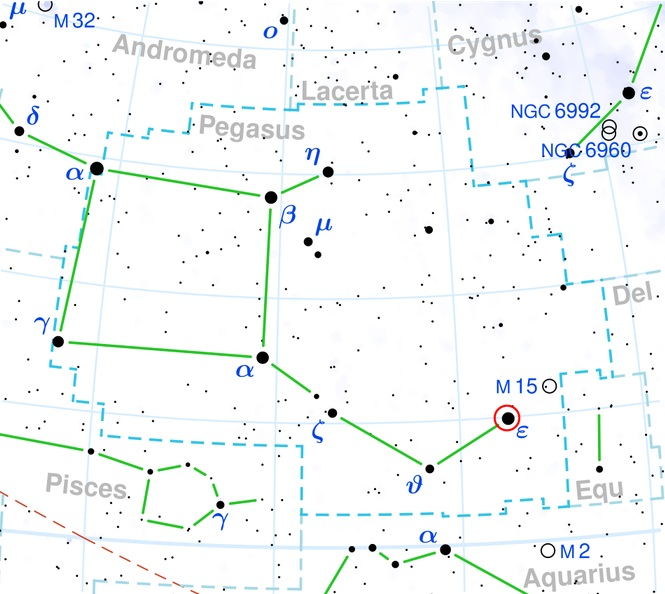
Enif (ε Pegasi) ist der hellste Stern im Pegasus und markiert dessen Schnauze. Sein arabischer Name bedeutet „Nase des Pferdes“. Der etwa 700 Lichtjahre entfernte orangefarbene Überriese ist ein weit entwickelter, massereicher und leicht veränderlicher Stern. Trotz seiner Bayer-Bezeichnung Epsilon überstrahlt er die übrigen Sterne des Pegasus. Enif gehört nicht zum Pegasusquadrat, liegt aber östlich davon und erleichtert das Erkennen des vollständigen Sternbildes.
| Scheinbare Magnitude | ca. 2,39 mag |
|---|---|
| Sichtbarkeit | Juli bis Januar; am besten von September bis November |
| Masse | ca. 11–12 M☉ |
| Entfernung | ca. 690 Lichtjahre |
Fomalhaut
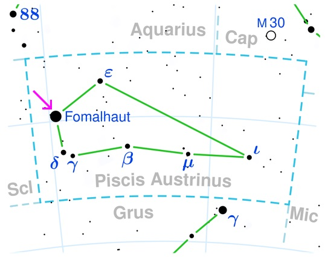
Fomalhaut (α Piscis Austrini) ist der hellste Stern im Südlichen Fisch und ein auffälliger Einzelstern des Herbsthimmels. Sein arabischer Name bedeutet „Maul des Fisches“. Der weiße Hauptreihenstern liegt nur etwa 25 Lichtjahre entfernt. Besonders bekannt ist sein komplexes System aus mehreren Staub- und Trümmergürteln. Der frühere Planetenkandidat Fomalhaut b gilt heute wahrscheinlich als expandierende Staubwolke nach einer Kollision größerer Kleinkörper.
| Scheinbare Magnitude | ca. 1,16 mag |
|---|---|
| Sichtbarkeit | August bis November; am besten im September und Oktober, tief im Süden |
| Masse | ca. 1,9 M☉ |
| Entfernung | ca. 25,1 Lichtjahre |
Hamal
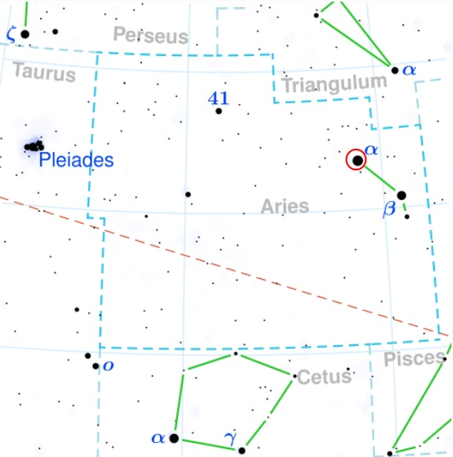
Hamal (α Arietis) ist der hellste Stern im Widder und bildet mit Sheratan und Mesarthim dessen charakteristischen Kopf. Der rund 66 Lichtjahre entfernte orangefarbene Riesenstern ist größer und leuchtkräftiger als die Sonne. Sein arabischer Name bedeutet „Lamm“ beziehungsweise „Widder“. Aufgrund der Präzession lag der Frühlingspunkt in der Antike in der Nähe dieses Himmelsbereichs, wodurch Hamal für Kalenderwesen und frühe Himmelsbeobachtung besondere Bedeutung erhielt.
| Scheinbare Magnitude | ca. 2,00 mag |
|---|---|
| Sichtbarkeit | August bis Februar; am besten von Oktober bis Dezember |
| Masse | ca. 1,5 M☉ |
| Entfernung | ca. 65,8 Lichtjahre |
Kochab
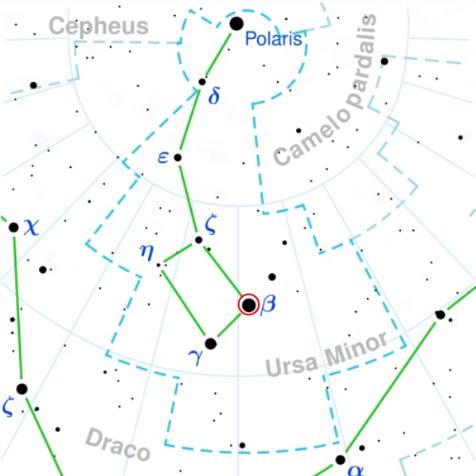
Kochab (β Ursae Minoris) ist nach Polaris der zweithellste Stern im Kleinen Bären und Teil des Kastens des Kleinen Wagens. Der orangefarbene Riesenstern liegt etwa 131 Lichtjahre entfernt. Gemeinsam mit Pherkad wird er als einer der „Wächter des Pols“ bezeichnet. Wegen der Präzession stand Kochab in der Antike näher am nördlichen Himmelspol als heute. Um den Stern wurde außerdem ein massereicher Exoplanet nachgewiesen.
| Scheinbare Magnitude | ca. 2,08 mag |
|---|---|
| Sichtbarkeit | Ganzjährig zirkumpolar |
| Masse | ca. 2,2 M☉ |
| Entfernung | ca. 131 Lichtjahre |
Mirfak
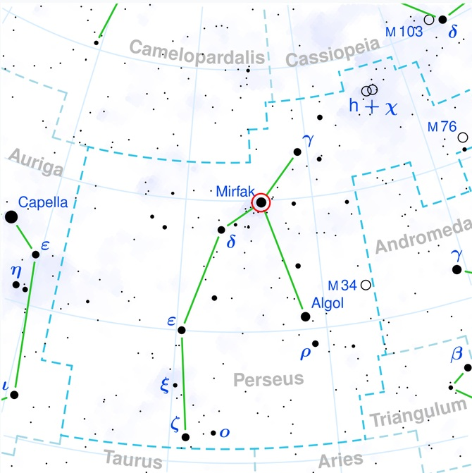
Mirfak (α Persei) ist der hellste Stern im Perseus. Der etwa 500 Lichtjahre entfernte gelblich-weiße Überriese ist wesentlich größer und leuchtkräftiger als die Sonne. Er steht im Zentrum des Alpha-Persei-Sternhaufens, auch Melotte 20 genannt, dessen junge Sterne bereits mit bloßem Auge oder einem Fernglas sichtbar sind. Sein arabischer Name bedeutet ungefähr „Ellenbogen der Plejaden“. Von Mitteleuropa aus ist Mirfak zirkumpolar.
| Scheinbare Magnitude | ca. 1,79 mag |
|---|---|
| Sichtbarkeit | Ganzjährig zirkumpolar; am besten im Herbst und Winter |
| Masse | ca. 8,5 M☉ |
| Entfernung | ca. 510 Lichtjahre |
Polarstern
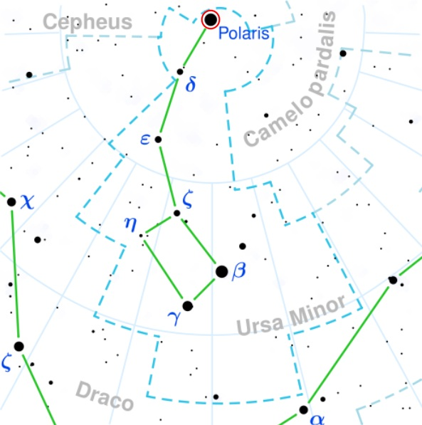
Polaris (α Ursae Minoris), der Polarstern, steht nahe dem nördlichen Himmelspol und scheint daher nahezu unbeweglich, während die übrigen Sterne um ihn kreisen. Seine Höhe über dem Horizont entspricht annähernd der geografischen Breite und machte ihn für die Navigation besonders wertvoll. Polaris ist ein Dreifachsternsystem; seine Hauptkomponente ist ein pulsierender Cepheidenstern. Durch die Präzession der Erdachse wird er nicht dauerhaft Polarstern bleiben.
Pollux
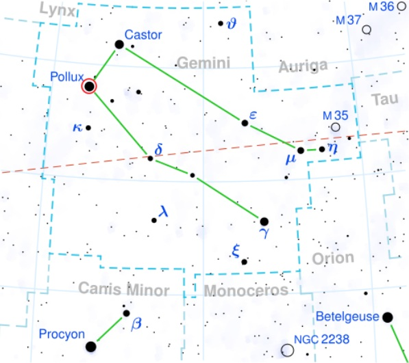
Pollux (β Geminorum) ist der hellste Stern im Sternbild Zwillinge und Teil des Wintersechsecks. Der etwa 34 Lichtjahre entfernte orangefarbene Riese ist der Sonne vergleichsweise nahe und besitzt einen nachgewiesenen Riesenplaneten. Seine rötliche Farbe kontrastiert deutlich mit dem weißlich leuchtenden Castor. Der Name ist die lateinische Form von Polydeukes, dem unsterblichen der beiden Dioskuren der griechischen Mythologie.
Procyon
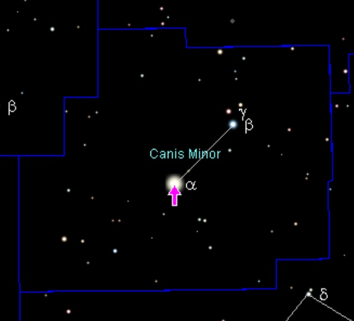
Procyon (α Canis Minoris) ist der hellste Stern im Kleinen Hund und Bestandteil von Winterdreieck und Wintersechseck. Er liegt nur etwa 11,5 Lichtjahre entfernt. Procyon ist ein Doppelsternsystem aus einem gelblich-weißen Unterriesen und einem lichtschwachen Weißen Zwerg. Der griechische Name bedeutet „vor dem Hund“, weil Procyon in vielen Breiten vor Sirius, dem Hundsstern, aufgeht.
Regulus
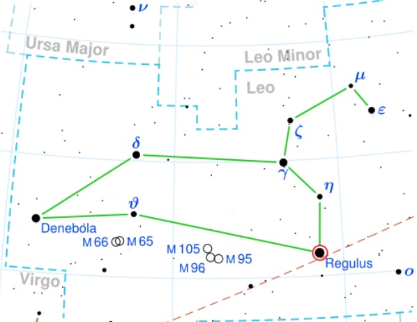
Regulus (α Leonis) ist der hellste Stern im Löwen und markiert dessen Herz. Der blauweiße Hauptstern rotiert so schnell, dass er deutlich abgeplattet ist. Regulus gehört zu einem Mehrfachsternsystem und liegt nahe der Ekliptik; deshalb wird er regelmäßig vom Mond und äußerst selten von Planeten bedeckt. Sein lateinischer Name bedeutet „kleiner König“. Gemeinsam mit Arktur und Spica bildet er das Frühlingsdreieck.
Rigel
Rigel (β Orionis) ist gewöhnlich der hellste Stern im Orion und bildet dessen linken Fuß. Der blauweiße Überriese ist trotz seiner großen Entfernung auffällig, weil er die Sonne um ein Vielfaches an Leuchtkraft übertrifft. Rigel gehört zu einem Mehrfachsternsystem und bildet einen Eckpunkt des Wintersechsecks. Sein Name stammt aus dem Arabischen und bedeutet sinngemäß „linker Fuß des Mittleren“.
Schedar
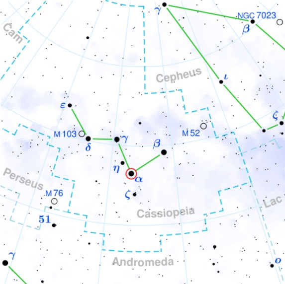
Schedar (α Cassiopeiae), auch Schedir geschrieben, ist meist der hellste Stern im Sternbild Kassiopeia. Der orangefarbene Riesenstern liegt rund 230 Lichtjahre entfernt und markiert in der traditionellen Darstellung die Brust der mythologischen Königin. Entsprechend geht sein Name auf das arabische Wort für „Brust“ zurück. Schedar ist Teil der charakteristischen W- beziehungsweise M-Form, durch die Kassiopeia besonders leicht zu erkennen ist.
Sirius
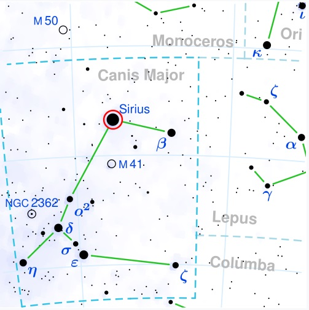
Sirius (α Canis Majoris) ist der hellste Stern des Nachthimmels und liegt nur etwa 8,6 Lichtjahre entfernt. Er bildet mit Procyon und Beteigeuze das Winterdreieck und gehört auch zum Wintersechseck. Sirius ist ein Doppelsternsystem: Der helle Hauptreihenstern Sirius A wird von Sirius B, einem Weißen Zwerg, begleitet. Sein griechischer Name bedeutet ungefähr „der Glühende“ oder „der Sengende“.
Spica
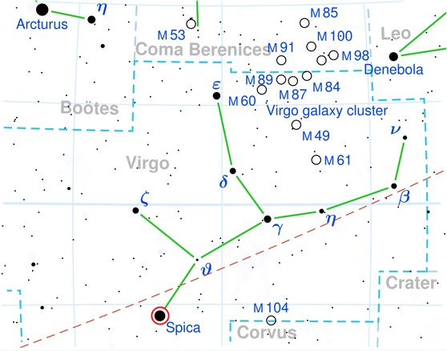
Spica (α Virginis) ist der hellste Stern der Jungfrau und bildet mit Arktur und Regulus das Frühlingsdreieck. Was wie ein einzelner blauweißer Stern erscheint, ist ein enges spektroskopisches Doppelsternsystem aus zwei heißen, massereichen Sternen. Spica liegt nahe der Ekliptik und kann daher vom Mond bedeckt werden. Der lateinische Name bedeutet „Kornähre“ und verweist auf die Ähre in der Hand der Jungfrau.
Vega
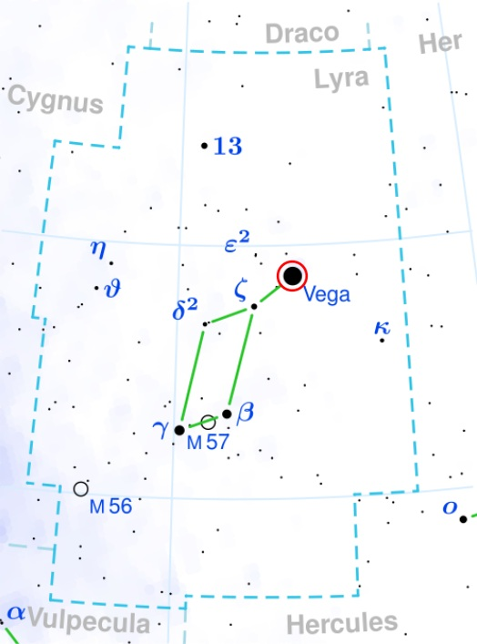
Vega (α Lyrae) ist der hellste Stern der Leier und bildet mit Deneb und Altair das Sommerdreieck. Sie liegt rund 25 Lichtjahre entfernt und rotiert sehr schnell, wobei wir nahezu auf einen ihrer Pole blicken. Vega besitzt eine ausgedehnte Staubscheibe und diente lange als photometrischer Referenzstern. Durch die Präzession der Erdachse wird sie in etwa 12.000 Jahren wieder nahe dem nördlichen Himmelspol stehen.